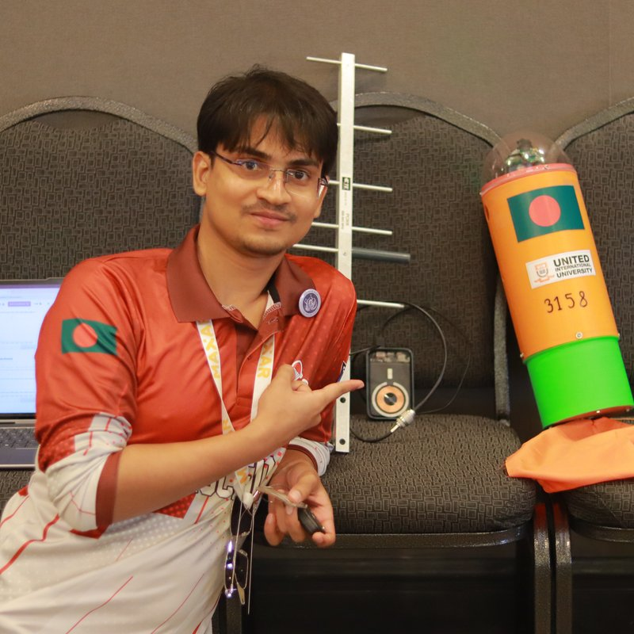

👋 Hi, my name is
I am an Electrical & Electronic Engineering (EEE) researcher and Co-Founder & CTO at ARIoT Technologies. I specialize in designing industry-grade autonomous mobile robots (ROS 2), aerospace telemetry systems (CanSat), custom STM32/ESP32 firmware, and high-efficiency LiFePO4 power architectures.

Hardware-software systems built from schematic design to autonomous deployment.
Engineered an industry-grade autonomous robot utilizing ROS 2, LiDAR SLAM, RK3588 AI SoC, Raspberry Pi 4, and STM32 motor controllers. Designed a custom 24V LiFePO4 battery pack and power distribution architecture. Awarded Top Capstone Project Honors.
Served as Electrical Team Lead for UIU CanSat teams. Directed embedded hardware design, multi-sensor atmospheric fusion, long-range RF telemetry, and flight power distribution for the International CanSat Competition in Virginia, USA.
Developing a commercial-grade IoT gas leak detection product featuring real-time cloud telemetry, mobile app alerts, automated valve shutoff support, and custom PCB enclosure design for household safety.
Secured 7th Place Globally (2025, Team Ascend) and 11th Place Globally (2024, Team Astro) as Electrical Team Lead representing United International University.
Leading R&D for autonomous ground vehicles and commercial IoT devices while conducting academic research on autonomous robotics at UIU.
Contributed as a hardware team member focusing on rover electronics and embedded sub-systems.
Published and presented research at academic conferences, symposiums, and journals focusing on IoT Systems, Precision Agriculture, and Sustainable Technologies.
United International University (UIU), Dhaka, Bangladesh
Top Capstone Project Honors • Undergraduate Research Assistant
ROS 2, Nav2, LiDAR SLAM, Sensor Fusion, Gazebo, OpenCV
STM32, ESP32, Arduino, RK3588 AI SoC, Raspberry Pi 4
Custom PCB Design, LiFePO4 Battery Packs, BMS, Power Distribution
C/C++, Python, Linux (Ubuntu), Git, Bash, IoT Cloud Backends